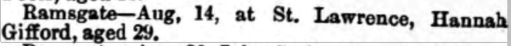

Hannah Gifford (née Lawrence) cJul 1865 - 1896
[ Home ] | [ Calendar ] | [ Surnames Index ] | [ Errors ] | [ Family History ]A laundress and the child of William Lawrence (a harbour labourer) and Johanna Edwards, Hannah Lawrence, the great-great-aunt of Nigel Horne, was born in St Lawrence, Thanet, Kent, England c. Jul 18651, was baptised there on 8 Oct 1865 and married Alfred Gifford (a milkman with whom she had 2 children: Alfred Daniel and Lily Ethel, along with 1 surviving child) in Thanet, Kent, England in Oct/Nov/Dec 18843.
During her life, she was living at Rear of Southwood Lodge, St Lawrence in Thanet on 2 Apr 18716; and at Southwood Road, St Lawrence in Thanet on 5 Apr 18917 - less than a mile from her mother Johanna Edwards who was living at 3 Providence Cottage, St Lawrence in Thanet, her father William Lawrence who was living at 3 Providence Cottage, St Lawrence in Thanet -, her niece Emily Lawrence who was living at 10 Claremont Gardens, Ramsgate, Kent - and her nephew Edward James S, nephew Walter Laurence and brother James Lawrence who were living at 10 Claremont Gardens, Ramsgate, Kent -.
She died on 14 Aug 1896 in St Lawrence2 and was buried there on 18 Aug 18964,5.
Parents
- William was born c. 1827
- Johanna Brooker was born in 1831
Children
- Alfred Daniel was born on 11 Jan 1887
Citations
- 1871 England Census Online publication - Provo, UT, USA: The Generations Network, Inc., 2004.Original data - Census Returns of England and Wales, 1871. Kew, Surrey, England: The National Archives of the UK (TNA): Public Record Office (PRO), 1871. Data imaged from the National
- England & Wales deaths 1837-2007 - Findmypast
- England & Wales Marriages 1837-2005 - Findmypast
- Kent, Canterbury Archdeaconry burials 1538-1988 - Findmypast
- England Deaths & Burials 1538-1991 - Findmypast
- 1871 England, Wales & Scotland Census - Findmypast (was age 5 and the daughter of the head of the household)
- 1891 England, Wales & Scotland Census - Findmypast (was age 27 and the wife of the head of the household)
Media
Thanet Advertiser - 22 Aug 1896

England & Wales births 1837-2006 - BMD/B/1865/3/AZ/000781/007
England & Wales marriages 1837-2008 - BMD/M/1884/4/AZ/000193/235
England & Wales deaths 1837-2007 - BMD/D/1896/3/AZ/000127/170
Kent, Canterbury Archdeaconry burials 1538-1988 - GBPRS/CANT/D/95281141
1891 England, Wales & Scotland Census - GBC/1891/0005906989
England Deaths & Burials 1538-1991 - R_277117232
Family Tree

Map
Generated by ged2site. Last updated on Jul 3, 2024
Known Issues
Census information missing between Census UK 1871 and 1891 England, Wales & Scotland Census - Findmypast